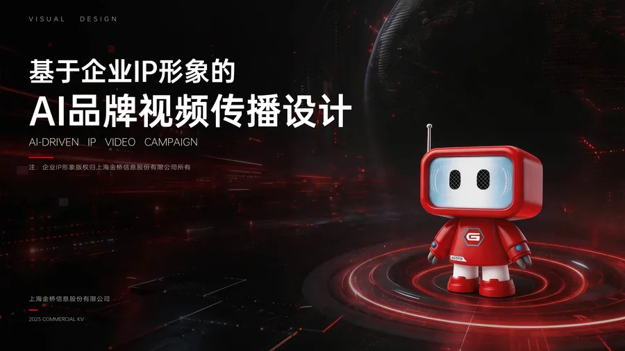
AI 驱动企业 IP 内容生成设计
让企业 IP 从静态形象走进品牌故事。围绕脚本、分镜、AI 画面与后期剪辑，构建角色统一、可持续更新的系列视频内容。
卓奕荣个人作品展示网站
设计连接未来
从创意探索，到设计落地。

让企业 IP 从静态形象走进品牌故事。围绕脚本、分镜、AI 画面与后期剪辑，构建角色统一、可持续更新的系列视频内容。
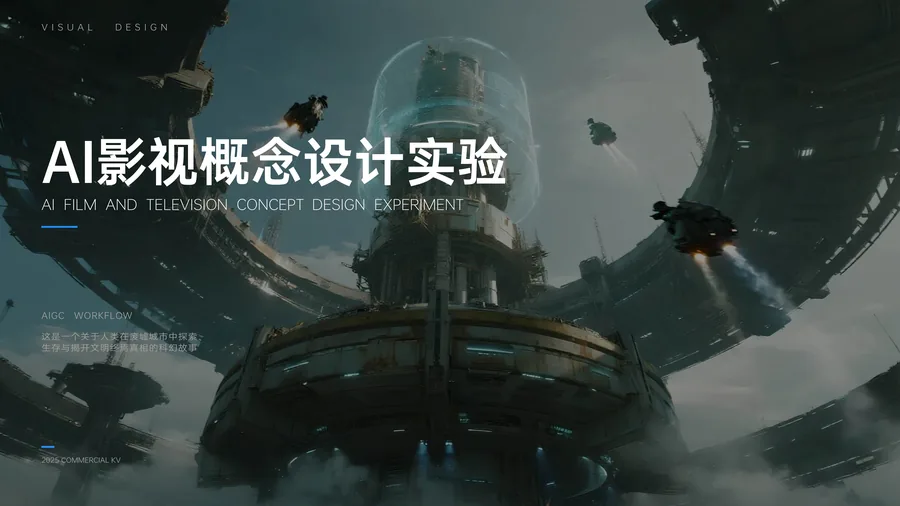
从一个科幻设定，建立完整的视觉世界。通过场景、材质与光影的统一，探索从静态概念图到动态镜头的叙事表达。
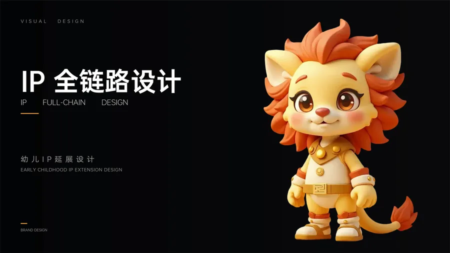
不止设计一个角色，更建立一套可延展的 IP 体系。从三视图、表情到多风格形象与周边应用，保持角色鲜明的识别度。
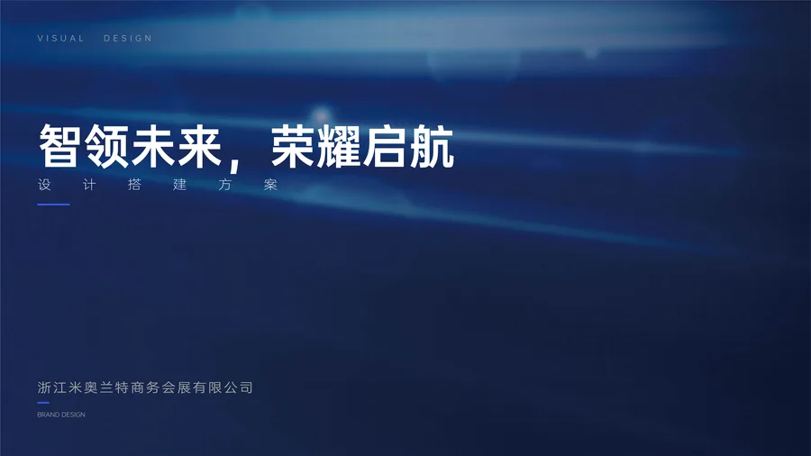
将「AI + 全球化会展」转化为统一的活动视觉。从主舞台大屏到邀请函与现场导视，让主视觉贯穿线上线下的每个触点。
把零散的灵感、计划与运营数据放到同一张工作台。通过 Vibe Coding 将真实创作需求变成可使用的工具，并持续验证与优化。
AI 驱动 · 视觉设计 · 品牌传播 · IP 创作
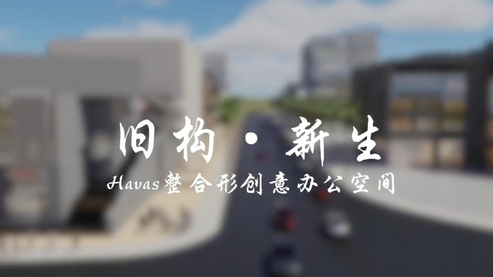
围绕办公空间展开的建筑设计案例分析与展示。
查看项目 →用 Vibe Coding 搭建的个人创作中枢，持续优化中。
查看项目 →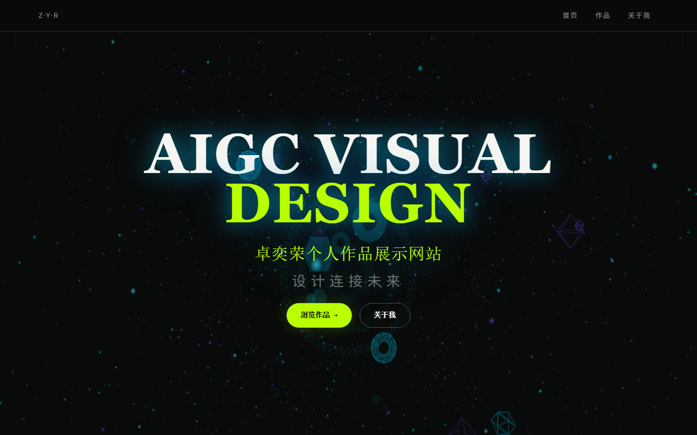
用 Vibe Coding 搭建的个人作品展示与持续更新平台。
查看项目 →基于企业IP形象，结合AI视频生成工具，构建系列化品牌宣传内容。
查看详情 →利用 AIGC 建立科幻世界观视觉工作流。
查看详情 →以童真陪伴、成长冒险为核心，建立IP视觉体系。
查看详情 →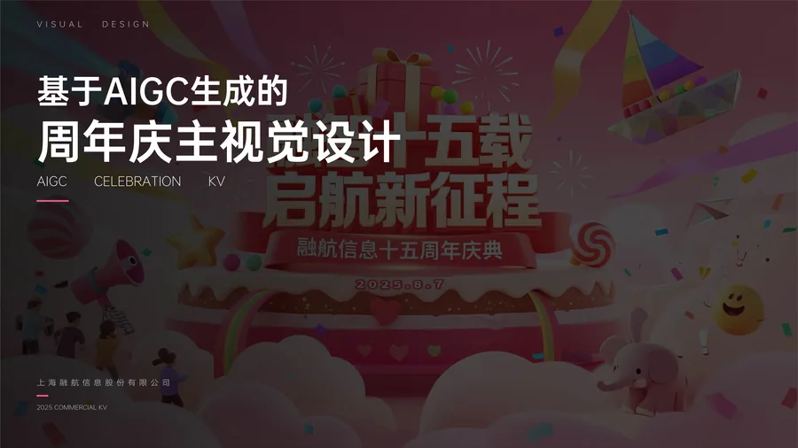
企业十五周年庆典主视觉设计。
查看详情 →AI慧展会展年会视觉系统设计。
查看详情 →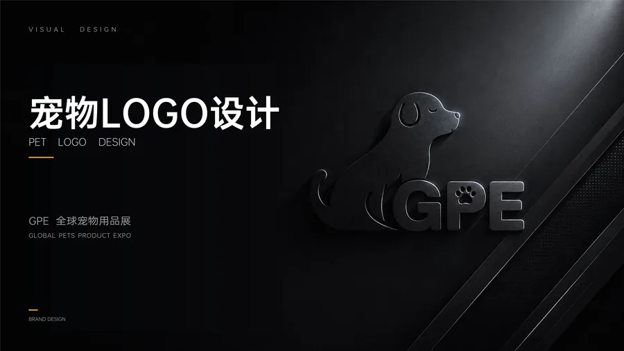
GPE全球宠物用品展品牌标识设计。
查看详情 →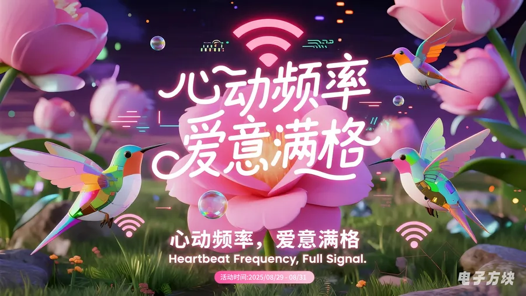
节气海报、节日KV、插画、品牌传播与展会物料。
查看详情 →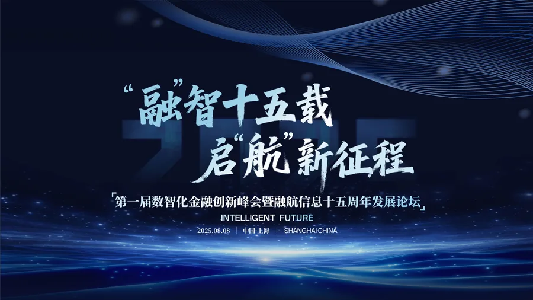
企业周年庆典主视觉视觉系统设计。
查看详情 →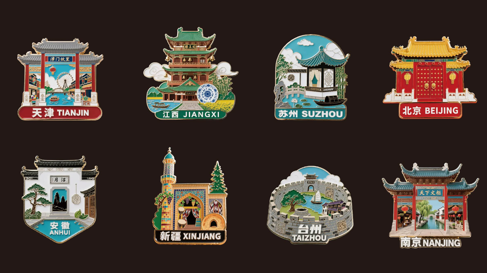
IP形象衍生文创产品设计。
查看详情 →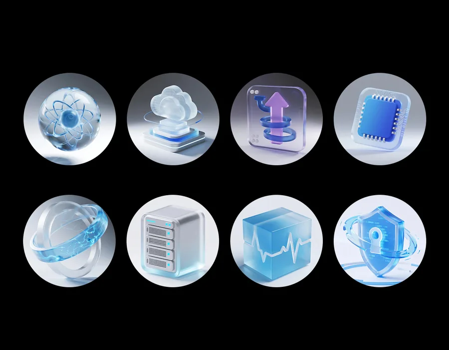
科技风格 icon 图标视觉符号体系。
查看详情 →AIGC视觉设计师 · 创意与技术的探索者
AIGC Visual Designer
专注于 AI 驱动视觉设计与品牌传播，善于将 AIGC 技术融入设计工作流，提升视觉生产效率与创意表现力。
拥有互联网与会展行业的设计实习经验，服务过上市公司与行业领先企业，具备从视觉定义到商业落地的完整项目能力。
上海金桥信息股份有限公司
市场部 · 视觉设计
企业IP短片设计、IP形象衍生及节日宣发物料设计。
上海融航信息技术股份有限公司
市场部 · 平面设计
企业周年庆主视觉KV与活动传播物料设计。
浙江米奥兰特商务会展股份有限公司
市场部 · 会展平面设计
AI慧展会展年会视觉系统及展会视觉设计。
如果你对我的作品感兴趣，或有合作机会，欢迎随时联系我。